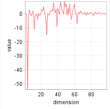

We consider a bicycle sharing system implemented in a city. Stations are set up all across the city, providing space for several bicycles each. As users drive across the city they move bicycles between the different stations. We notice that over time some stations are lacking bicycles, while others are running out of bicycle capacity. We try to solve this problem with I-EPOS.
Start I-EPOS from the homescreen.
Select the dataset by clicking the "Browse" button to right of "Data Set Location", and selecting the directory "bicycle".
We want the change in the number of bicycles stored in each station to be zero, or at least close to zero. Therefore, we leave the "Global Cost Location" at "zero.target". I-EPOS will try to minimize the squared distance between the global cost and the target, that is the zero vector in this case.
For now we are only interested in minimizing the global cost, so please set the "Local Cost Influence" to 0.
The other parameters should be left as is. They specify that we want to execute I-EPOS in a binary tree over 15 iterations, which is sufficient for the algorithm to converge for this example. The "Seed" defines the seed for the random number generator used by I-EPOS. Choosing a different value would result in slightly different results.
Click the "Run" button to start the simulation.
While I-EPOS is executing, it tries to find combinations of user plans that make the total change in the number of bikes (referred to as global response) as small as possible. When the result window opens, it shows in the top section how the algorithm managed to reduce the global cost from its initial guess over a course of multiple iterations. The initial guess is already quite a lot better than the solution we get if we would let users freely choose bicycle stations. In this case the global cost would be nearly 4000. In the following iterations the global cost is quickly reduced and reaches its minimum after finishing iteration 12.
On the bottom left we see the global response after the first iteration. Each dimension in this plot represents the change in the number of bikes for one bicycle station over a 2 hour time frame. The initial guess of the algorithm shows that a station is missing 16 bikes after 2 hours of users leaving from or arriving at the station. If users could travel however they liked, the largest change would be over 50 bikes.
On the bottom right we see the network of agents. Each agent that changed its selection compared to the previous iteration is marked with the color black. Since this is the state after the first iteration, all agents had to select some initial plan and therefore changed their selection.
Navigate through the iterations using the buttons "Next" and "Previous" to see how I-EPOS manages to improve the global response step by step. Notice how the global response gets stabler and stabler over the iterations. In the end I-EPOS is able to stabilize all stations so far that they loose or gain one bicycle at most, compared to the 16 in the first iteration.
In the first few iterations we also see how I-EPOS ensures monotonic improvement of the global cost - by limiting the change to a subset of agents.
Close the report window, so that you are back at the homescreen.
We notice that the users don't like the suggestions our system makes. If the users could freely choose their plans, the global response would be as follows:
In order to make the system more appealing to users, we have to consider their preferences, encoded in the local cost.
Start I-EPOS from the homescreen.
Select the bicycle dataset again as explained above.
Set the "Local Cost Influence" to 0.9
Click the "Run" button to start the simulation.
I-EPOS now needs less iterations to reduce the global cost (top), since the added local influence to the plan selection process limits the choices the algorithm has to reduce the global cost. The average local cost of all agents is also plotted as a dashed line. With about 0.004 it is nearly optimal. Due to the fact that the users in the dataset can have multiple plans with minimal local cost, I-EPOS still has enough freedom to greatly reduce the global cost.
The global response (bottom left) is already pretty similar to the user preferred result shown above. However, I-EPOS manages to turn this initial solution that many users like into a solution with much lower global cost without sacrifycing on the local cost.
Navigate through the iterations again using the buttons "Next" and "Previous" to see how I-EPOS manages to improve the global response step by step. Notice that the global response is not as stable as it was in our previous simulation. We can see that I-EPOS focused on reducing the large spikes in the user preferred response (shown above) that have the largest effect on the global cost.
We provide our users with an app where they get bicycle stations suggested that they should use. However, not all of our users make use of the app. We want to use I-EPOS to let all participating users help us to stabilize traffic from non-participating users.
Start I-EPOS from the homescreen.
Select the bicycle dataset again as explained in point A.
Select the target by clicking the "Browse" button to right of "Global Cost Location", and selecting the file "incentive.target". This target describes that we want the left half of the stations to lose 5 bikes and the right half of the stations to receive 5 bikes over a 2 hour period. This should correct all bicycle moves made by non-participating users.
Set the "Local Cost Influence" to 0.0 Usually we would of course choose 0.9 again. However, without local cost minimization the results of this scenario are more apparent.
Click the "Run" button to start the simulation.
This scenario seems harder to minimize than when targeting a change of zero, as the algorithm takes longer to converge according to the global cost plot (top). Based on the global cost we can already see that we will not be able to match the target as well as before due to the higher cost at the minimum.
The initial global response (bottom left) already shows a tendency towards negative values on the left and towards positive values on the right.
Navigate through the iterations again using the buttons "Next" and "Previous" to see how I-EPOS manages to improve the global response step by step. Notice that in the end the global response barely reaches the target change of -5 for the left side or +5 for the right side. This means the target is too ambitious or the dataset is not flexible enough. But in the end I-EPOS did enable us to make our system more stable the whole system with all of our users.
| conf/ | Contains configuration files used by I-EPOS. |
| datasets/ | Contains sample datasets for I-EPOS. |
| datasets/bicycle/ | The bicycle dataset. It contains data of a bicycle sharing system. Each user of this system is represented as an agent. The possible plans of each agent are encoded as a vector with values as the incoming minus the outgoing bicycles of a user in each station at a certain time slot. For example, a user traveling from station 1 to station 3 and from station 4 to station 3 has the following plan: (−1, 0, 2, −1, . . .). I-EPOS can select recommended stations for each user agent such that the number of bicycles among the stations remains balanced. |
| datasets/energy/ | The energy dataset. It contains data about the electricity consumption of households. Each household is represented as an agent. The possible plans of each agent are encoded as a vector with each value being the electricity consumption at one point in time. I-EPOS can be used to select plans in a way that electricity demand peaks are reduced. |
| datasets/gaussian/ | The gaussian dataset. It contains generated data. The possible plans of each agent are drawn from a multivariate standard normal distribution. |
| datasets/full_datasets.zip | Contains versions of the bicycle and energy dataset with more agents. |
| manual.pdf | A description how to use I-EPOS and how to extend the functionality by adding custom datasets and custom cost functions. |
| lib/ | Contains the libraries used by I-EPOS. |
| vm/ | Contains the virtual machine configuration as well as its virtual hard disk. |
| videos/ | Contains videos showing different algorithms in action. They demonstrate how agents change their plan selections over time. At the end of the videos a plot is shown that summarizes how the global cost got reduced over multiple iterations. |
| IEPOS.jar | The I-EPOS executable. Executable with the command java -jar IEPOS.jar. |
| index.html | This document. |
| README.txt | The readme file. |
| Evangelos Pournaras | evangelos.pournaras@gess.ethz.ch |
| Peter Pilgerstorfer | peter.pilgerstorfer@outlook.com |